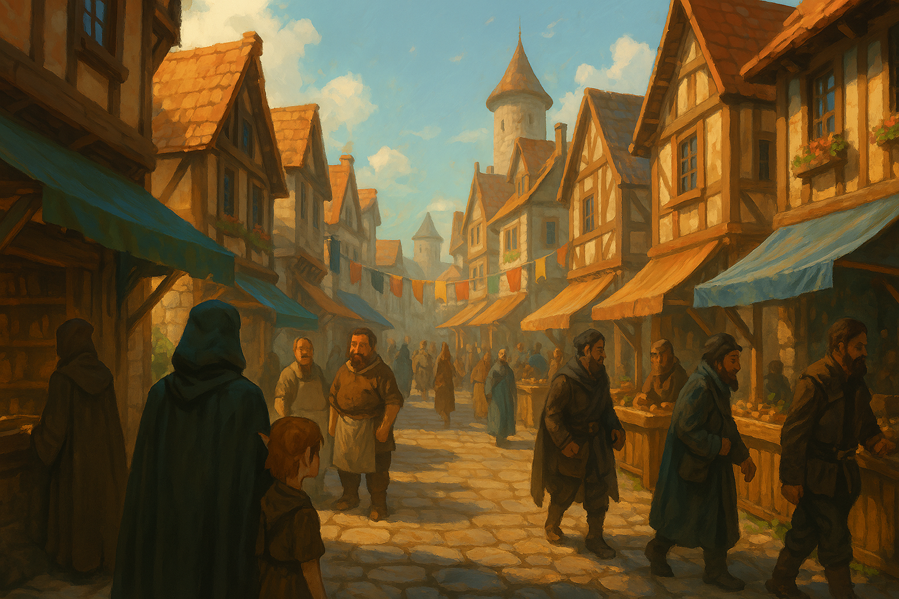

Chapter 0: Echoes of the Jade Spire
Rugatha Demo Arc
A tranquil night investigation atop the emerald tower.

Rugatha Demo Arc
A tranquil night investigation atop the emerald tower.
15048.7.18
Whispers ripple through the upper tiers of Rugatha as strange harmonics ring from the Jade Spire. The party ascends by moonlight, finding arcane runes pulsing beneath the glass floors.
Inside, the echo reveals a forgotten chamber tuned to amplify psionic voices. A lone custodian offers uneasy alliance, warning that the song seeks a new host before dawn.
“The spire sings for a mind strong enough to answer. Tell me, are you listening?”
— Custodian of the Jade Spire